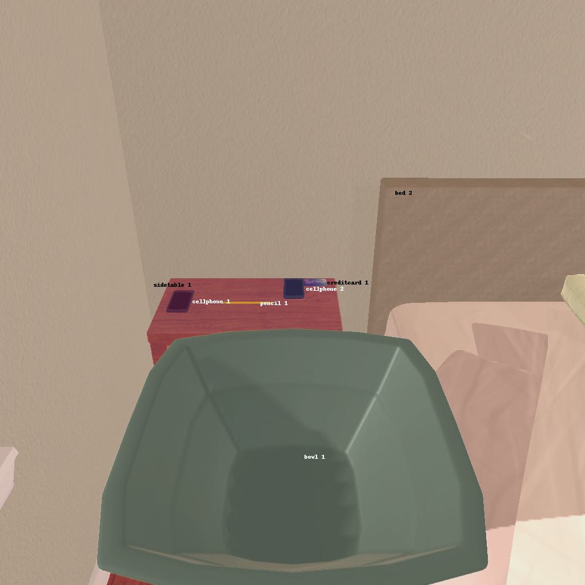

---------------------------------------------------------task: 6---------------------------------------------------------
--------------------------------------------------------------------------------------------------------------------------------------------------------------------
--------------------------------------------------------------------------------------------------------------------------------------------------------------------
Step:--------------------------------------------------------------------------14-------------------------------------------------------------------------------
----------------------------------------
VLM Prompt:
Image1:
Image2:
Image3:
**Instruction**
1. Analyze the provided image to identify all visible household objects, focusing on those relevant to the task description "put some cd on safe."
2. Use the analysis of the image and the task hint "The agent must find an object of the desired type, pick it up, find the correct location to place it, and put it down there." to answer the question: what is the most reasonable action in the choices for the task description "put some cd on safe"?
4. Decide and write the answer using the template: The answer is: (i): , where i is the real number. If there is no desired object in the image, search every place based on **Initial Observation** to find the object. And if no one is exactly correct, choose a similar answer.
**Initial Observation**
You are in the middle of a room. Looking quickly around you, you can see bed (1-2), dresser (1), sidetable (1-2), drawer (1-11), desk (1), garbagecan (1), safe (1)
**Answer Choices**
(1): go to bed 1
(2): go to bed 2
(3): go to sidetable 1
(4): go to drawer 2
(5): go to sidetable 2
(6): go to drawer 3
(7): go to drawer 4
(8): go to desk 1
(9): go to garbagecan 1
(10): go to drawer 5
(11): go to drawer 6
(12): go to drawer 7
(13): go to drawer 8
(14): go to drawer 9
(15): go to drawer 10
(16): go to drawer 11
(17): go to safe 1
(18): close drawer 1
(19): put bowl 1 in/on drawer 1
(20): examine bowl 1
(21): examine drawer 1
**Answer**
Let's think step by step by following the instructions.
----------------------------------------
----------------------------------------
Original Response:
First, we analyze the provided images to identify all visible household objects. From the images, we can see the following objects:
- Image 1: dresser 1, safe 1, mug 1, pen 1, cd 1, bowl 1, drawer 8, drawer 9
- Image 2: sidetable 1, postcard 1, cellphone 1, pencil 1, bowl 1, bed 2
- Image 3: sidetable 2, postcard 1, cellphone 1, pencil 1, bowl 1, bed 2
The task description is "put some cd on safe." From the initial observation, we are informed there is a safe (safe 1) in the room. In Image 1, we can see there is a cd (cd 1) on the dresser 1, which is likely the object we need to put on the safe.
Based on the task hint, the agent must find the cd, pick it up, find the safe, and put the cd on it. Since we can see the cd in Image 1, the most reasonable next action would be to pick up the cd.
None of the provided answer choices directly indicate picking up the cd. However, since the cd is on the dresser 1, the closest action that would lead to the cd is going to the dresser. As there is no specific action to "go to dresser 1," we must choose an action that involves interacting with an object close to the cd, which is on dresser 1.
The answer choices do not list dresser 1, but we see drawer 8 and drawer 9, which are part of dresser 1. Since we need to be at the dresser to pick up the cd, the most reasonable action from the choices provided would be to go to one of these drawers, which are part of the dresser 1.
The answer is: (13): go to drawer 8.
----------------------------------------
----------------------------------------
>>> Refine Original VLM Response and Get Pure Action: go to drawer 8
----------------------------------------
-----------------------------------------------------------------
Running time: 17.111237287521362 seconds
Total Money: 3.5002999999999993
-----------------------------------------------------------------
-----------------------------------------------------------------
Text Observation:You arrive at loc 14. The drawer 8 is closed.
-----------------------------------------------------------------
UNSUCCEED